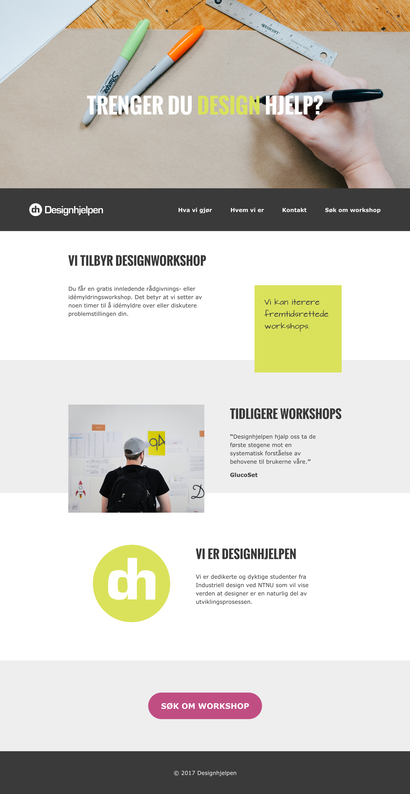
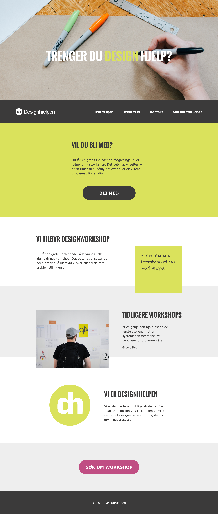
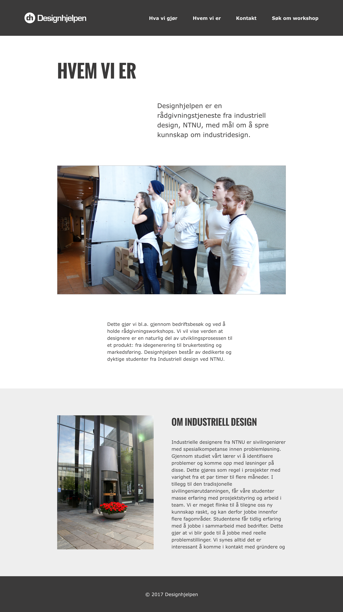
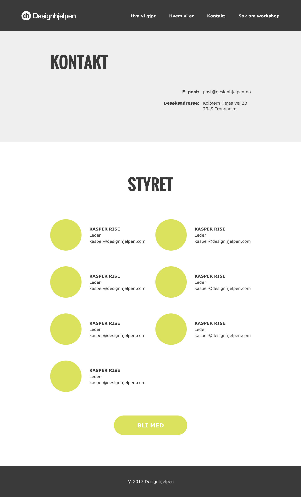
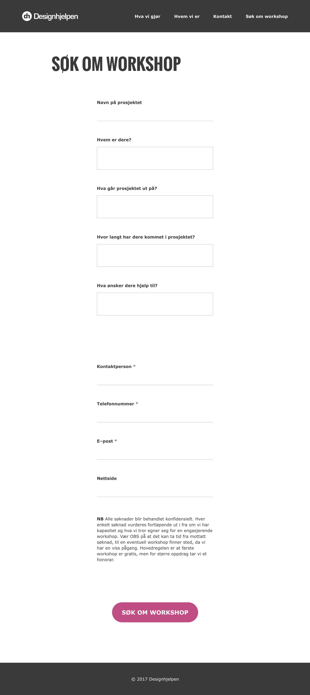
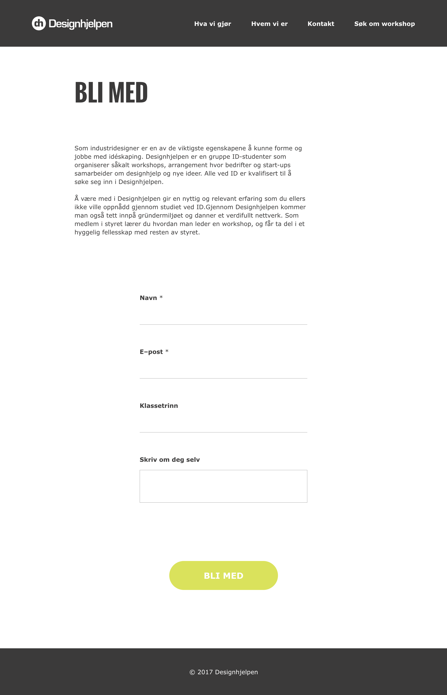
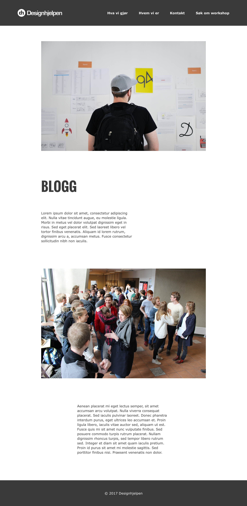
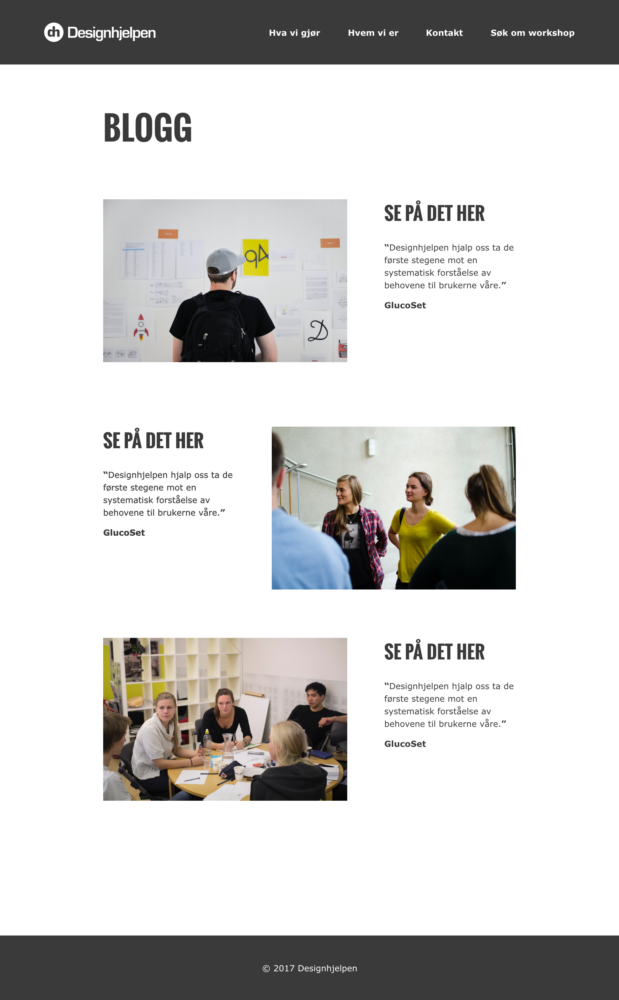

P2 – Design
Medlemmer: Bendik, Kasper, Caspar, Ninni and Mia
Dato: 09.10.2017
Administrative details
Client: Designhjelpen, a student organization
Contact Person: Torgeir Bell, external consultant
Navigation structure
The website should be easily navigable while having a mix of hierarchical and linear structure , and thus the inclusion of an easily visible navigation bar/navbar residing at the top of every page seemed logical. A considerable amount of the navigation will happen through this navbar.
The navbar contain links to:
- Designhjelpen: Home page (home.html)
- Hva vi gjør (what.html)
- Hvem vi er (who.html)
- Kontakt (contact.html)
- Søk om workshop (workshop.html)
Some pages, namely the “Bli med” and “Blogg” pages, follow a more local hierarchical structure and are nested/linked within other pages making them inaccessible directly from all pages by the navbar. This is both more logical (theme and page-wise) as well as more practical than having every page displayed, and potentially overcrowding the navbar.
The “Bli med” (application.html) page link usually resides within the “Kontakt” page, except when applications are open, which is usually at the beginning of each autumn semester. At that time an application page-link will be easily visible on the homepage.
Additionally, both the Home page and the “Hva vi gjør” page (what.html) will also contain a link to the “Blogg” page (blog.html), which, in turn, will include links to specific blog posts (blogPost.html).

Purpose, goals and audience
The purpose of the website is to provide information about Designhjelpen and a way for companies to get in contact with them. The goal of the website is therefore to be a clear and intriguing information channel as well as to make it easy for clients to get in contact. In addition, we want to create an easy way for companies to apply for a workshop through the website. The target audience is companies and startups who are looking for design input or want to increase their knowledge and skill in design, especially in interactive design, product design and service design. This includes companies or startups who need inspiration and guidance on a project. They could also just be interested in getting a better understanding of design. Other typical users are students who are seeking help for a school assignment and could benefit from a design workshop. They could also be students who are interested in learning about and/ or becoming a member of Designhjelpen.
Page layout and appearance
The website should look visually appealing and professional, as it also functions as promotion for Designhjelpen. We wanted to use a color scheme that fits the graphic profile of Designhjelpen and use graphical elements and images to make the website visually appealing and professional.
Font
The typeface used corresponds with the graphical profile of Designhjelpen. The typefaces used are Oswald and Verdana. The header <h1> is Oswald; font-weight: bold; font-size: 100px. The subheader <h2> is Oswal; font-weight: bold; font-size: 56px. The lead paragraph <p class=”lead”> is Verdana; font-weight: regular; font-size 36px. The paragraph <p> is Verdana; font-weight: regular; font-size 26px.
Colour
The colors are also taken from the graphical profile of Designhjelpen, namely #FFFFFF (white), #EEEEEE (light grey), #3B3A3A (dark grey), #DAE25C (green), #78B1E0 (blue), #C04E83 (purple). The background is white and light grey. The navbar is dark grey. The logo and the links on the navbar is white for good contrast. The headers, subheaders, lead paragraphs and paragraphs are dark grey. Most decorative elements are green, as well as the “Bli med”–link/ button. Blue is used for links to other pages and purple is used for the “Søk om workshop”–button to make the button standout.
Logo
The logo is placed on the top left corner of the navbar and also functions as a home button.
Navigation bar
The navbar is sticky. On the home page the navbar will appear on the bottom of the image until scrolled to the top. On the rest of the website the navbar is alway visible on the top of the screen. We want the navbar to always be visible for easy access. The menu is restricted to only four categories for easy navigation: “Hva vi gjør”, “Hvem vi er”, “Kontakt” and “Søk om workshop”. We made sure that the first three categories doesn’t overlap for clear navigation, and we added “Søk om workshop” on the navbar because the main goal for the target audience, specifically businesses, are to apply for a workshop.
Footer
The footer is on the bottom of all pages. It contains the copyright notice and is used to frame the website and create a visual boundary.
Content
Hjem/ Home
The Home page (home.html) is the first page the visitor sees when he enters the website. The home page should give an overview of Designhjelpen. It should be clear for first time visitors what the main purpose of the website is, as well as giving them an idea of what type of service Designhjelpen provides. This page should also make it easy for visitors who already know about Designhjelpen, and are simply looking for applying for a workshop.
The home page will have large image that covers the screen with the title: “Trenger du design hjelp?” / (“Do you need design help?”). This shows the main purpose of the website. Further down the website the visitor can get an overview over the website's content. There will be three blocks of information, a “quote–box” that will randomly show a quote from one of the workshops, and lastly a button for applying for a workshop. The information blocks will give the visitor an insight in the three main pages on the site: “Hva vi gjør”, “Tidligere workshops/ Blogg” and “Hvem vi er”. The blocks can be clicked for further information, and will lead the visitor to their respective pages.
- Image/ video
- (Bli med i Designhjelpen) – only during the start of each semester
- Hva vi gjør
- Quote
- Tidligere workshop / Blogg
- Hvem vi er
- Søk om workshop
Home page
Home page at the start of the semester
Hva vi gjør/ What we do
One of the goals was to be a clear and intriguing information channel. We therefore plan on making a guide on how to apply for a workshop and what to expect from that workshop afterwards, putting emphasis on the benefits of doing a workshop with the help from Designhjelpen. The “Hva vi gjør” page (what.html) contains information about the process of having a workshop with Designhjelpen. It will show a step by step guide of the process with drawn illustrations. After the guide we will put a link to the blog page, where visitors can get a better understanding of what Designhjelpen does. At the end we also added a button to the “Søk om workshop” page. The content for this page looks like this:
- Info about workshops
- Step-by-step guide on how to apply for a workshop
- Link to previous workshops
- “Søk om workshop”–button / Apply for a workshop

Hvem vi er/ Who we are
The “Hvem vi er” page (who.html) contains information about the members of Designhjelpen, as well as general information about Industrial Design at NTNU. This page is meant to give visitors an idea of who the people behind Designhjelpen are and what their backgrounds are. This page will contain an image of the members of Designhjelpen and a picture of the Institute of Design. The content of the page looks like this:
- Information about the members of Designhjelpen
- About Industrial Design at NTNU

Kontakt/ Contact
Our goal was to give the visitors the opportunity to get in contact with Designhjelpen. The “Kontakt” page (contact.html) serves the purpose to give contact information to the visitors. This page therefore contains contact information such as email and address at the top of the page, as well as contact information to each of the board members. To fulfill our goal of making it easy for users to apply for a job at Designhjelpen, we added the possibility to apply for a job from this page. Since Designhjelpen only hires new people once every semester, the button will be somewhat hidden at the bottom of this page. However, at the start of each semester it will show up at the top of the home page. The content of the page looks like this:
- General contact information
- Contact information to each of the board members
- “Søk om å bli med i Designhjelpen”–button / Apply for a job

Søk om workshop/ Workshop
The “Workshop” page (workshop.html) is a form for visitors that want to apply for a workshop. One of our goals was to make it easy for the visitors to get in contact with Designhjelpen. It was also important that it was easy to apply for a workshop as this is the main service Designhjelpen provides. The contact form makes it easy for the visitors to provide the information Designhjelpen need, and in turn makes it faster to get in contact and organize a workshop with Designhjelpen. The form consist of contact information and five questions that specify who the appliers are, what their project is, how far they have come in the process, and what they need help with.

Bli med i Designhjelpen/ Application
The “Bli med“ page (application.html) contains information about how it is to work at Designhjelpen as well as an application form. The form contains question about what year they are in, and an application text. This page is meant to be mostly used in the start of each semester, when Designhjelpen hires new member, but is accessible throughout the year.

Blogg/ Blog and blog post
The “Blogg” page (blog.html) is an informative page about previous workshops and other information that Designhjelpen wants to share. Through the blog the visitors can see the work Designhjelpen has done in the past, providing useful information to potential clients. To clarify, the blog.html is an overview of all the blog posts that has been published, and the blogpost.html is an example of a blog post itself. The blog post will contain pictures of the workshop, some text about what happened during the workshop, and an comment from the client. The blogs therefore acts as an information channel that further provides more insight into the true value of having a workshop with Designhjelpen.
 Blog page
 Blog posts
Minimum requirements
We plan on using JavaScript programming for four different purposes; checking that the application form is properly filled in, such as checking that the email address is correctly formatted and that the phone number only contains digits; a skill generator that randomly matches a verb, an adjective and a noun to form a hopefully fun skill, an admission button that only show up at the beginning of each semester when Designhjelpen recruits new people, and an image that changes based on the time of day, displaying an appropriate picture of the department of design.
The intention with our planned applications of JS, except from the form validator, is to make a more engaging, welcoming and fun website, lowering the barrier for people to make contact with Designhjelpen. While the skills displayed will probably not be quite accurate, chances are they will make people pay a bit more attention, and expect not only a good result from a workshop, but also to have a good time. The changing header image and skill will also help make the website more alive, hopefully making people pay a bit more attention.
As Designhjelpen is only open to applications at the beginning of each semester, a button with the text “I want to join!” would be misleading most of the year, but not having one would be a problem during recruitment periods. Therefore, we plan on making it appear only in january and august (or possibly another timespan, which is up to Designhjelpen), while being hidden in other months. This should also be possible through Javascript.
Plan
We will be using the organizational scheme below to create and store our files and using work division tables to control who is responsible for what and for setting deadlines.
Organizatorial scheme
All of the following files will be collected in a folder named “project”, which will be created at the beginning of the coding phase of the project.
List of files and folders
- HTML/
- home.html
- what.html
- who.html
- contact.html
- workshop.html
- application.html
- blog.html
- blogPost.html
- img/
- logo.png
- homepage_image1.jpg
- homepage_image2.jpg
- step1.png
- step2.png
- step3.png
- group.png
- id1.jpg
- id2.jpg
- id3.jpg
- member1.jpg
- member2.jpg
- member3.jpg
- member4.jpg
- member5.jpg
- member6.jpg
- member7.jpg
- blog_image1.png
- blog_image2.png
- blog_image3.png
- blog_image4.png
- blog_image5.png
- scripts/
- validateForms.js
- quoteSkills.js
- changePhotos.js
- datedInfo.js
- css/
Work division and deadlines
| Filename |
Description |
In charge |
Deadline |
| home.html |
The home page |
Caspar |
20.10.17 |
| what.html |
Information about what Designhjelpen do, how it is organized and what to expect. |
Mia |
20.10.17 |
| who.html |
A page that explains who their members are. |
Caspar |
20.10.17 |
| contact.html |
Contact information for Designhjelpen and all its members. |
Ninni |
20.10.17 |
| workshop.html |
An application form for a workshop intended for companies |
Ninni |
20.10.17 |
| application.html |
An application form for a job at Designhjelpen |
Bendik |
20.10.17 |
| blog.html |
A blog page |
Kasper |
20.10.17 |
| blogPost.html |
A blog post |
Kasper |
20.10.17 |
| validateForms.js |
JavaScript used to validate the information by users. |
Ninni |
01.11.17 |
| quoteSkills.js |
JavaScript used to generate a random skill displayed on the home page. |
Caspar |
01.11.17 |
| changePhotos.js |
JavaScript used to change photo based on the time of day. |
Mia |
01.11.17 |
| dateInfo.js |
JavaScript used to make information show up based on a specific time of the year. |
Kasper |
01.11.17 |
| style.css |
The CSS file containing all styling for the website. |
Bendik |
06.11.17 |
| Final check |
Double checking each file for errors, checking the JavaScript and CSS. |
All |
10.11.17 |